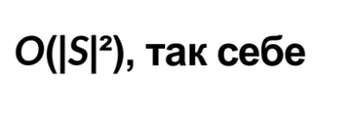
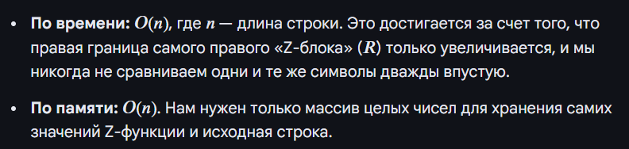
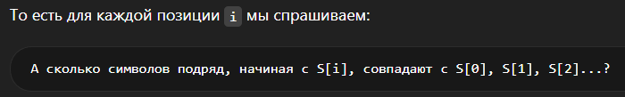
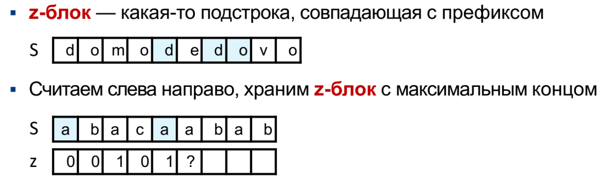
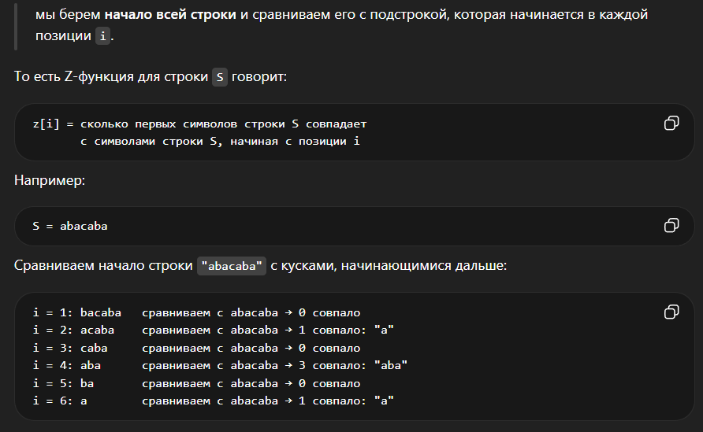
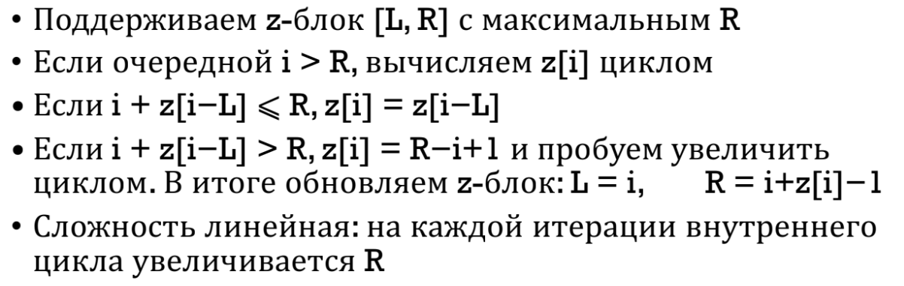
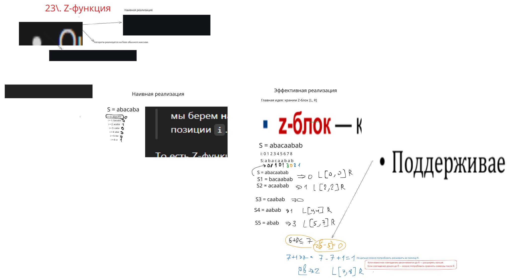

23. Z-функция
Теория, примеры и иллюстрации по теме.
Материалы и примеры по пунктам
Z-функция

Наивная реализация


Алгоритм реализуется на базе обычного массива

Эффективная реализация
Наивная реализация
Главная идея: храним Z-блок [L, R]

S = abacaba

i = 0: abacaba
i = 1: bacaba
i = 2: acaba
i = 3: caba
i = 4: aba
i = 5: ba
i = 6: a
S = abacaabab

i: 0 1 2 3 4 5 6 7 8
S: a b a c a a b a b
S = abacaabab
S1 = bacaabab
S2 = acaabab
S3 = caabab
S4 = aabab
S5 = abab
Но дальше можно попробовать расширить за границу R.
Если известное совпадение заканчивается до R — расширять нельзя.
Если совпадение дошло до R — можно попробовать сравнить символы после R.
Схемы и рукописные примеры
